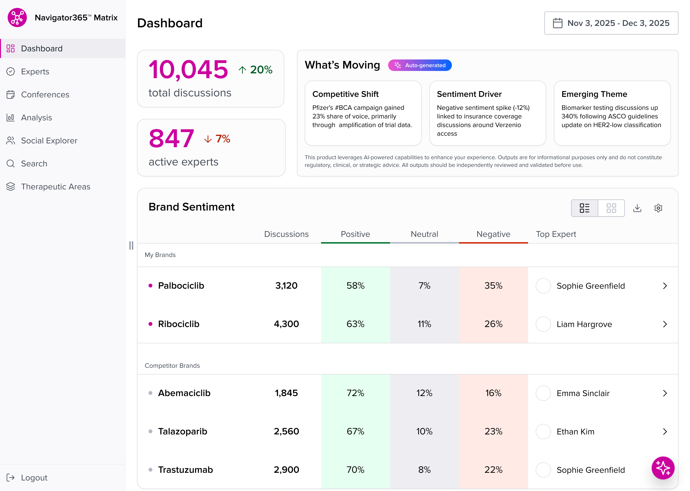
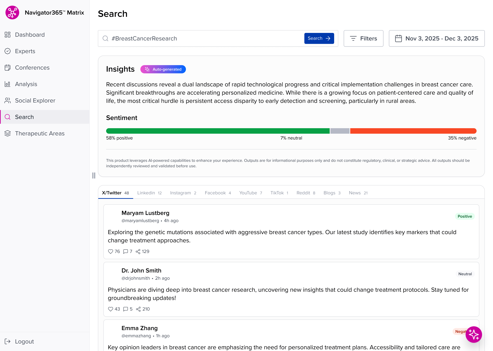
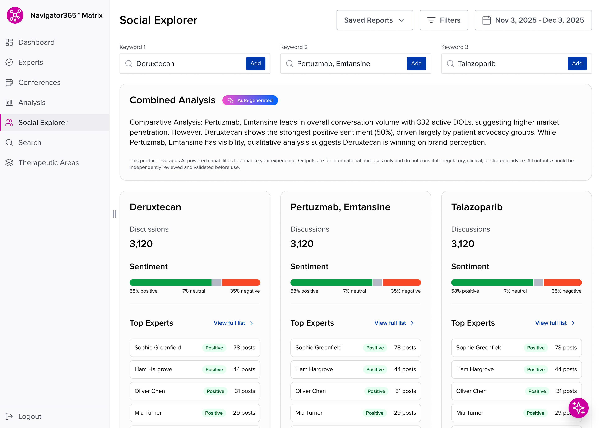

Ten thousand discussions, one screen.
Medical affairs teams need to know what key opinion leaders are saying about their brands, their competitors' brands, and whole therapeutic areas, across social platforms, conferences, and news. Navigator365 Matrix pulls that conversation into one place. I led design across the platform's dashboard, search, and comparative analysis views.
The core design problem is density. A brand team scans dozens of drugs, thousands of discussions, and shifting sentiment in one sitting. The answer is a strict tabular language: sentiment always reads in the same three-color split, numbers stay in columns, and every list ends in a person you can click, because the whole point is knowing which expert to talk to next.

Auto-generated, and labeled that way.
The platform generates plain-language summaries of what's moving and why: competitive shifts, sentiment drivers, emerging themes. In pharma, that kind of synthesis needs guardrails. Anything auto-generated is labeled at the point of reading, with a standing disclaimer that outputs are informational and need independent review. The summaries speed up review, but the person remains responsible for the judgment.

Compare the same view side by side.
Brand questions are rarely about one keyword. Social Explorer runs up to three side by side, with a combined analysis on top and matching sentiment and expert panels below, so differences read across a single row instead of across three exports.

Results
- Social Explorer compares up to three keywords with combined, auto-generated analysis.
- Nine channels, from X and LinkedIn to journals and news, normalized into one feed.